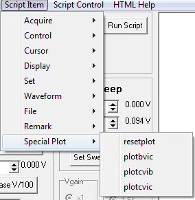

Single point data from a DC read operation can be sequentially plotted
using these functions. This allows very slow sweeps of data acqusition
to take place using a script program.
restplot Clears the current trace buffer of data
and sets the data pointer to the first position (256 data points are available for plotting).
plotbvic Takes the DC
Read Voltages
Values and places the Base Voltage into the Collector Voltage tace then
the Collector Current into the Collector Current trace. The trace plot
is updated to shown the new data point.
plotcvib Takes the DC
Read Voltages
Values and places the Collector Voltage into the Collector Voltage tace
then the Base Current into the Collector Current trace. The trace plot
is
updated to shown the new data point.
plotcvic Takes the DC
Read Voltages
Values and places the Collector Voltage into the Collector Voltage tace
then the Collector Current into the Collector Current trace. The trace plot
is
updated to shown the new data point.
plotbvcv Takes the DC
Read Voltages
Values and places the Base Voltage into the Collector Voltage tace
then the Collector Voltage*1mA into the Collector Current trace. The trace plot
is
updated to shown the new data point.
Script Item:
Main: